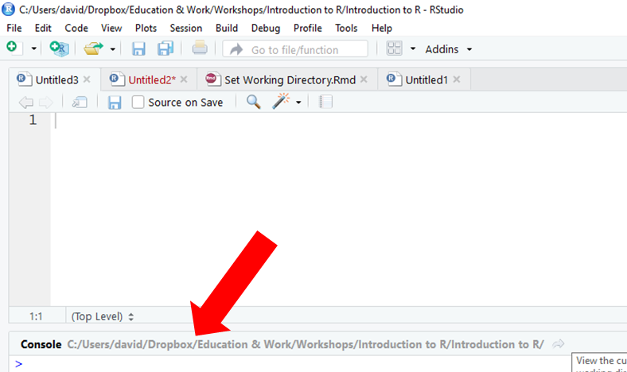

Chapter 4 Setting a Working Directory
A working directory refers to the location of a folder within a hierarchical file system. For our purposes, a working directory contains data files associated with a particular task or project. Ideally, a single working directory contains all of the data files you need for a task or project, but in some instances, it might make sense to have multiple working directories for a single project. From our designated working directory, we can read in data files (i.e., import files) to the R environment without adding long paths as prefixes in front of the variable names. Further, anytime you save a plot, data frame, or other object created in R, the default will be to save it to the folder you have set as your working directory (i.e., export files).
4.0.0.1 Video Tutorial
As usual, you have the choice to follow along with the written tutorial in this chapter or to watch the video tutorial below. Both versions of the tutorial demonstrate how to identify what your current working directory is and how to set a new working directory.
Link to Video Tutorial: https://youtu.be/oSqOqvMkhSE
4.0.0.2 Functions & Packages Introduced
| Function | Package |
|---|---|
getwd |
base R |
setwd |
base R |
4.0.1 Identify the Current Working Directory
To determine if a working directory has already been set, and if so, what that working directory is, use the getwd (get working directory) function from base R. Because this function comes standard with our R download, we don’t need to install an additional package to access it. For this function, you don’t need any arguments within the parentheses; in other words, leave the function parentheses empty. Alternatively, if you are using RStudio, you will see your current working directory next to the word “Console” in your Console window.

4.0.2 Set a New Working Directory
Let’s assume that the current working directory is not what we want; meaning, we need to set a new or different working directory. If you need to set a new working directory, you can use the setwd function from base R. Within the parentheses, your only argument will be the working directory in quotation marks. I recommend typing your setwd function into an R Script (.R) file so that it can be saved for future sessions. I also recommend using the # to annotate your script so that you can remind yourself (and others) what you are doing.
When it comes to working directories, R likes the forward slash (/) (as opposed to backslash). Remember, the working directory is the location of the data files you wish to access and bring into the R environment. You can access any folder you would like and set it as your working directory. For example, in the code below, I set my working directory to H:/RWorkshop, as that folder at the end of that path contains the data files I would like to work with. The folder (and associated path) you set as your working directory will almost certainly be different than the one I set below.
Alternatively, you may use the drop-down menus to select a working directory folder. To do so, go to Session > Set Working Directory > Choose Directory…, and select the folder where your files live. Upon doing so, your working directory will appear in the Console. You can copy and paste the working directory into your setwd function.

Once you have set your working directory, you can verify that it was set to the correct folder by (a) typing getwd() into your console or (b) looking at the working directory listed next to the word “Console” in your Console window.
4.1 Summary
In this chapter, you learned how to get and set a working directory using the getwd and setwd functions from base R.